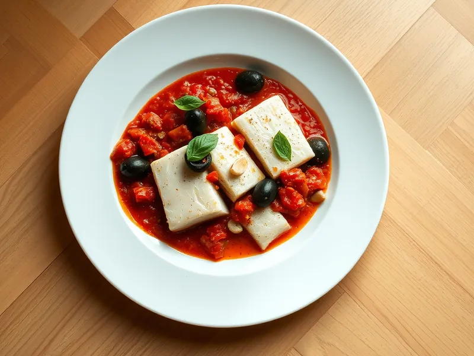

Треска с помидорами и маслинами на сковороде
Треска, томлённая в соусе из свежих помидоров, чеснока и маслин
25 мин2 порц.445 ккал на порциюБ 48 · Ж 22 · У 15Средиземноморская кухня
Открыть в приложении: порции, таймеры, список покупок
Продукты на 2 порц.
- Треска500 г
- Помидоры3 шт
- Оливки / маслины60 г
- Лук репчатый1 шт
- Чеснок2 зуб.
- Оливковое масло2 ст. л.
- Сушёные травы1 ч. л.
- Сольпо вкусу
- Перец чёрный молотый1 щеп.
- Базилик по желаниюпо вкусу
Как готовить
- Нарежьте лук мелким кубиком, чеснок тонкими пластинками, помидоры кубиком, маслины кольцами.
- Обжарьте лук на оливковом масле на среднем огне 4 минуты до мягкости, добавьте чеснок и жарьте ещё 1 минуту.
- Положите помидоры, сушёные травы, посолите и тушите 7 минут, пока помидоры не пустят сок и соус не загустеет.
- Нарежьте треску кусками по 5-6 см, посолите, поперчите и выложите в соус, добавьте маслины.
- Накройте крышкой и тушите на слабом огне 8-10 минут, пока рыба не станет белой и не будет расслаиваться.
- Посыпьте рваным базиликом и подавайте прямо со сковороды.
Совет. Не перемешивайте рыбу в соусе, а поливайте её ложкой: так куски останутся целыми.